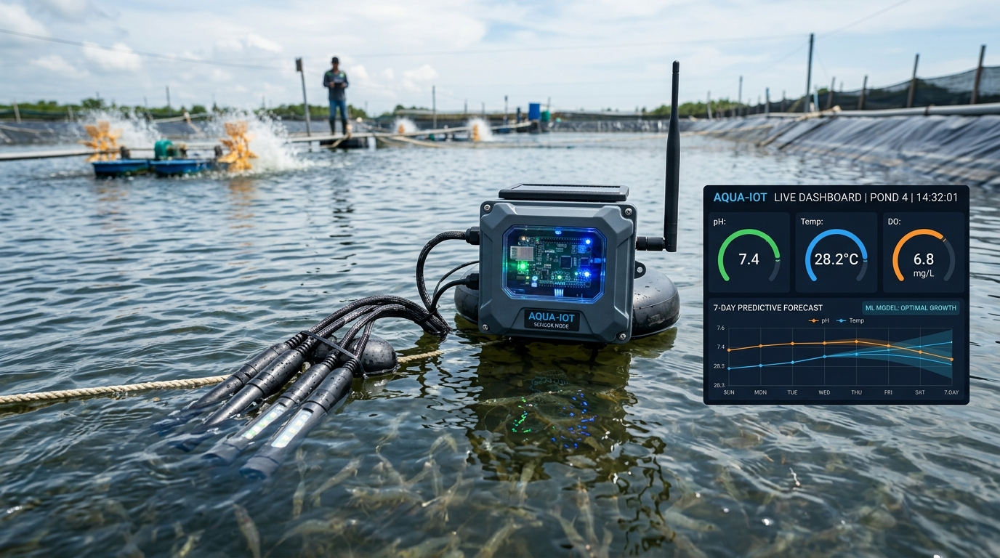
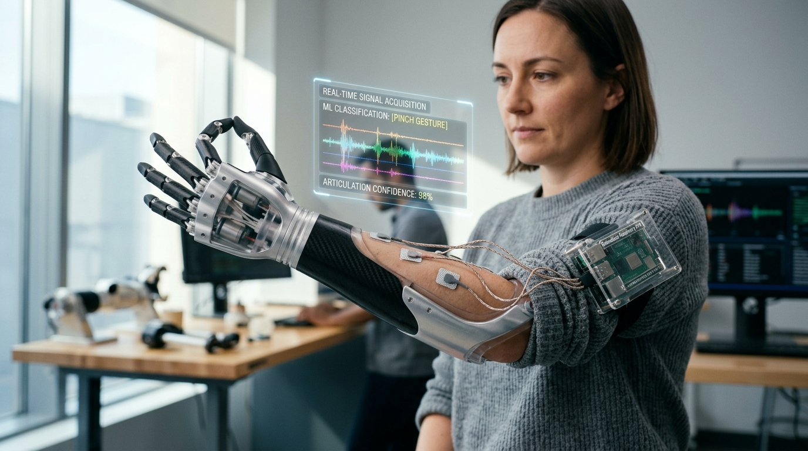

3 Completely Box-Free Concepts
No container cards, no box borders, no rectangular outlines. Content floats organically inside atmospheric light fields directly on the dark canvas.

Aqua Guard Smart Water Monitoring
Automating 24/7 pond telemetry for commercial aquaculture. Continuous physical sensors stream pH, temperature, and turbidity directly into cloud dashboards, paired with machine learning to forecast pond risk 7 days ahead.

Myosync Bionic Prosthetic Control
Non-invasive neuro-prosthetic articulation engineered for specially-abled individuals. Real-time surface muscle potential acquisition decoded through Raspberry Pi edge machine learning to drive multi-finger robotic actuation.
Aqua Guard Smart Water Monitoring
Continuous physical water telemetry replacing manual sampling. Live web telemetry alerts farmers instantly to dangerous parameter fluctuations, safeguarding high-investment aquaculture crops.
Myosync Bionic Arm Control
Surface EMG bio-potential sensors capture real-time muscle impulses from amputees, decoded through embedded Raspberry Pi algorithms to coordinate natural multi-finger prosthetic articulation.
Aqua Guard Smart Water Monitoring
Autonomous multi-sensor buoy monitoring aquaculture ponds 24/7 with predictive AI analytics.
Myosync EMG Prosthetic Arm Control
Assistive neuro-rehabilitation system converting neuromuscular electrical impulses into dexterous bionic finger actuation.